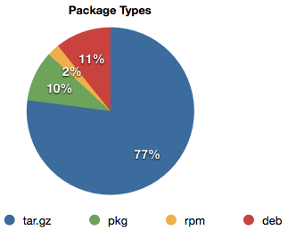

Visits to taskwarrior.org and tasktools.org. The recent uptrend due to the Dirk Deimeke articles and the new Wikipedia page.
Interesting statistics from the taskwarrior web site and repository. These data form a baseline against which to measure marketing efforts. This page will be updated after the end of each month.
Visits to taskwarrior.org and tasktools.org.
The recent uptrend due to the Dirk Deimeke articles and the new
Wikipedia page.

Note that only downloads directly from taskwarrior.org and sourceforge.com
are recorded. The number of downloads from freshmeat.net and many others
are unknown. The reduction in SourceForge downloads may be due to the
inclusion of taskwarrior packages into all major Linux distributions.
This probably applies to source downloads in general.

Development began in 2006, but used Subversion. That history was not
brought into git. The large spike represents 1.8.0, which was essentially
a complete rewrite.

It is expected that there will ultimately be at least 10,000 unit tests.
The more unit tests we add, the harder it becomes to break task and not
notice. More tests should result in fewer bugs, except in the areas of
new features, which tend to be buggy at first, until the bugs are found
and the unit tests catch up.

The erratic early bug find rate is probably due to two factors: a small
test suite with limited coverage, and a sudden increase in the number of
users.
The fix rate closely matches the find rate, which means that we are very
responsive to bugs, and the number of outstanding bugs remains fairly
constant.
The recent upturn is due to one person.

Feature requests are low, which is expected. The more features we put
into task, the harder it becomes to dream up new ones. At some point,
that will probably go to zero and stay there.
There is also the difference between a gap in functionality (which is easy to spot) and a lack of advanced features (which may not occur to people). An example of this is the recent feedback on the proposed burndown chart, which stated "did not realize that I would like/want this until I saw it".
The recent upturn is due to one person.

The http://tasktools.org/latest url responds with the version number of
the current stable version of task. It is intended for use in auto-update
scripts.
Someone is using it.

The packages downloaded from taskwarrior.org are heavily biased toward
source tarballs, but that is to be expected. With binary packages already
included with a distribution, why would you need a .deb file from us?

This chart now shows absolute numbers instead of percentages, and the
result is more telling. It looks like all the new visitors are running
Linux.